CS180 Project 4: Neural Radiance Fields
UC Berkeley • Fall 2025
Nandini Velinedi
Part 0: Camera Calibration and 3D Scanning
Before training any neural fields, I started by collecting my own multi-view dataset and calibrating my phone camera.
I printed the ArUco checkerboard and took around 30–50 photos from different angles and distances while keeping the zoom fixed
so the camera intrinsics stayed consistent. Using the starter calibration script, I recovered my camera intrinsics (K) and the
per-image extrinsics (c2w). Then I ran the same capture and processing pipeline on three different small tabletop objects and saved
them as my_data_obj1.npz, my_data_obj2.npz, and my_data_obj3.npz. After looking at the visualizations
and early NeRF results, I picked the object that looked the cleanest and most stable and used that one for the rest of the project.
To make sure my calibration was actually working, I used the provided viser helpers to visualize the recovered cameras and rays in 3D.
The camera frustums wrapped nicely around the object, and the rays roughly pointed toward the center of the scene. That gave me confidence that
my poses, focal length, and coordinate conventions were set up correctly. This step caught a lot of potential “oops” moments early, like flipped axes
or cameras aiming in the wrong direction, before I spent time training NeRF.
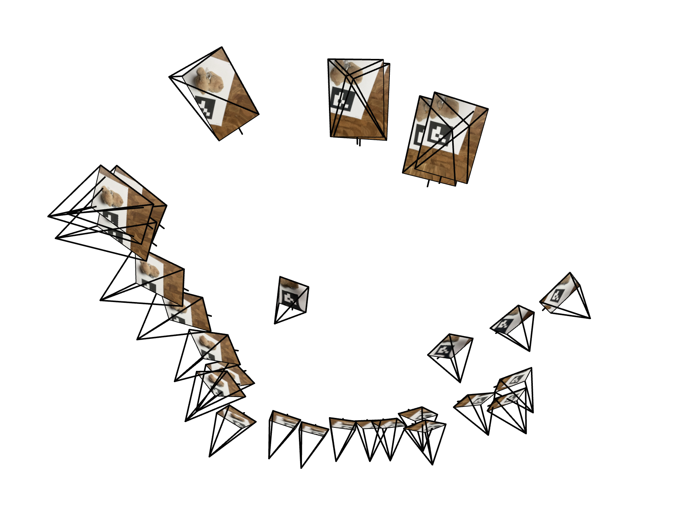
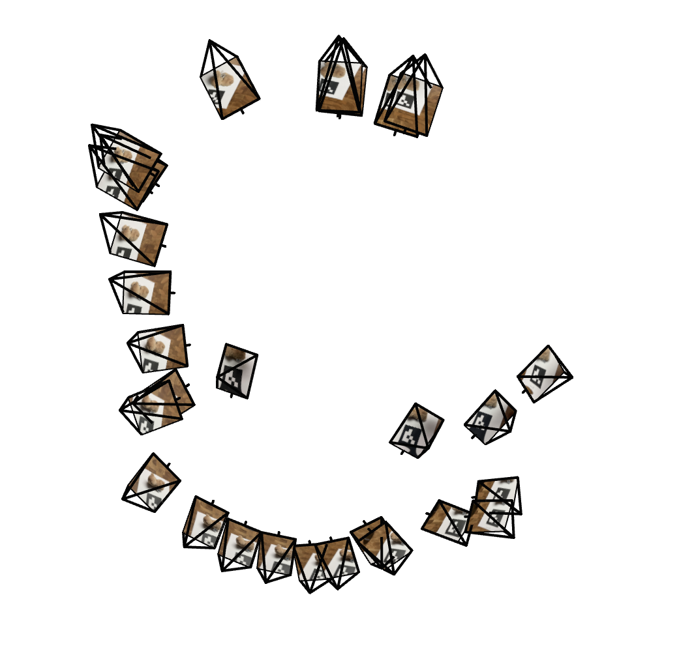
I reused these calibrated intrinsics and poses later in Part 2 for the Lego NeRF, and again in Part 2.6 when I trained a NeRF on my own object. Having a solid calibration step at the beginning made everything else less painful.
Part 1: Fit a Neural Field to a 2D Image
In Part 1, I built a simple neural field that learns a function from 2D pixel coordinates to RGB values. The model is a small fully-connected MLP that takes in a pixel location (normalized to a fixed range), applies sinusoidal positional encoding, and then passes it through several hidden layers. The positional encoding lets the network represent higher-frequency details instead of just learning a blurry average. I trained the model with mean squared error (MSE) between the predicted and ground-truth pixel colors and tracked Peak Signal-to-Noise Ratio (PSNR) over time to see how the reconstruction quality improved. Thinking of the image as a continuous function over 2D space was a very gentle way to get used to coordinate-based networks before jumping into 3D.
My 2D neural field uses four hidden layers, each with 128 channels. After each hidden layer I apply a ReLU nonlinearity, and at the end I output three values for RGB and squash them with a sigmoid so the colors stay in a reasonable range. For positional encoding, I expand each coordinate into a set of sine and cosine terms at different frequencies. This gives the model an easier time representing sharp edges and detailed textures. I train with Adam at a learning rate of 1e-2, and for efficiency I sample around 10,000 random pixels per iteration instead of using the full image every time. Over many iterations, the model still “sees” the whole image, just in small chunks.
Part 1.1: Training on the Fox Image
I first trained the model on the provided fox image. At the very beginning, the network basically predicts something close to a flat average color, so the reconstruction looks like a soft blob with no structure. As training goes on and it sees more sampled pixels, the fox’s silhouette appears, then the background starts to separate out, and eventually the details of the face, fur, and shading show up. By the end, the reconstruction looks very close to the original image. The PSNR curve steadily climbs and then levels off once the model has captured as much detail as it can with this architecture and encoding.
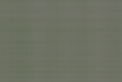
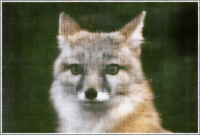
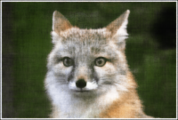

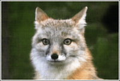

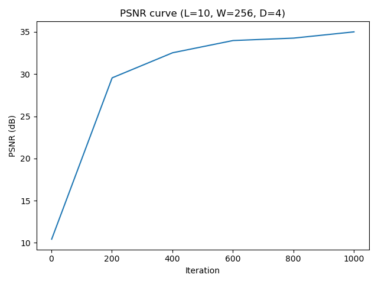
Part 1.2: Training on My Own Image
Next, I repeated the setup on my own photo (pizza.jpeg). This image has way more high-frequency stuff going on
(cheese texture, toppings, plate edges, small lighting changes), so it’s harder to fit than the fox. Early on, the reconstruction looks very mushy
and over-smoothed. As training continues, the model slowly recovers the circular plate, the crust, and the contrast between the pizza and the table.
It takes more iterations for the network to lock onto the tiny details, but it eventually gets there. This made it really obvious that “harder” images
need both stronger positional encoding and a bit more training time.
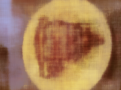
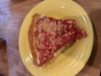

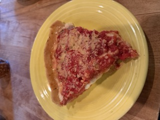
Part 1.3: Hyperparameter Sweep — Width & PE Frequency
I also tried a small hyperparameter sweep on the fox image. I changed the network width (64 vs 256) and the maximum positional encoding frequency (L = 4 vs L = 10). With a narrow network and low-frequency encoding, the model mainly captures smooth structure and big color regions, and the image looks a bit blurry. With a wider network and higher-frequency encoding, the model can represent sharp edges, fine fur details, and more subtle texture. Seeing all four combinations in a 2×2 grid made it very clear that both model size and positional encoding really matter for final image quality.
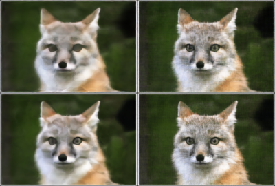
Part 2: Neural Radiance Field from Multi-view Images
In Part 2, I took the same idea from the 2D neural field and extended it to a full Neural Radiance Field (NeRF) using the Lego dataset. Instead of mapping a 2D coordinate to a color, the model now takes in a 3D point and a viewing direction and predicts a density and an RGB color. The dataset provides multi-view images and camera poses, so I can shoot rays through the scene for each pixel and sample many 3D points along those rays. NeRF learns a function that tells me what’s in the scene at those points, and then I combine everything using differentiable volume rendering to render new images.
The Lego dataset is packaged as an .npz file that contains training, validation, and test images,
plus the corresponding camera-to-world matrices and a single focal length. I build a standard 3×3 camera intrinsic matrix from this focal length
and the image size by putting the focal on the diagonal and the image center as the principal point. This matrix is what I use to turn pixel coordinates
into directions in camera space and, eventually, rays in world space.
I implemented pixel_to_camera(K, uv, s) to map image pixel coordinates back into camera space by undoing the pinhole projection.
This gives me a point on a plane in front of the camera at some depth. Then I used transform_points(c2w, Xc) to move those points
from camera space into world space using the c2w matrices and homogeneous coordinates. The camera origin comes directly from
c2w[:3, 3], and the ray direction is just the normalized vector from the camera origin to the world-space point at depth 1.
Once this is in place, I can generate a clean ray origin and direction for every pixel in every training image.
For each ray, I sample a fixed number of depths between a chosen near and far bound. For Lego, these bounds are picked so the object is fully inside that range. During training, I add a bit of random jitter within each depth interval so that the model doesn’t always see the exact same set of points. This randomization makes the sampling less “grid-like” and helps NeRF better approximate a continuous volume. When I render final or validation images, I turn off the noise so the results are stable and reproducible.
My RaysData class flattens all pixels from all training images into a big pool of rays. Each ray stores its origin, direction, and
the ground-truth RGB value for that pixel. Every training step, I just grab a random batch of these rays and use them to update the model.
To check that my ray math made sense, I used viser again to visualize the camera frustums, rays, and sample points in 3D.
Seeing the rays passing through the Lego statue from the right cameras was a nice sanity check before training the big NeRF model.
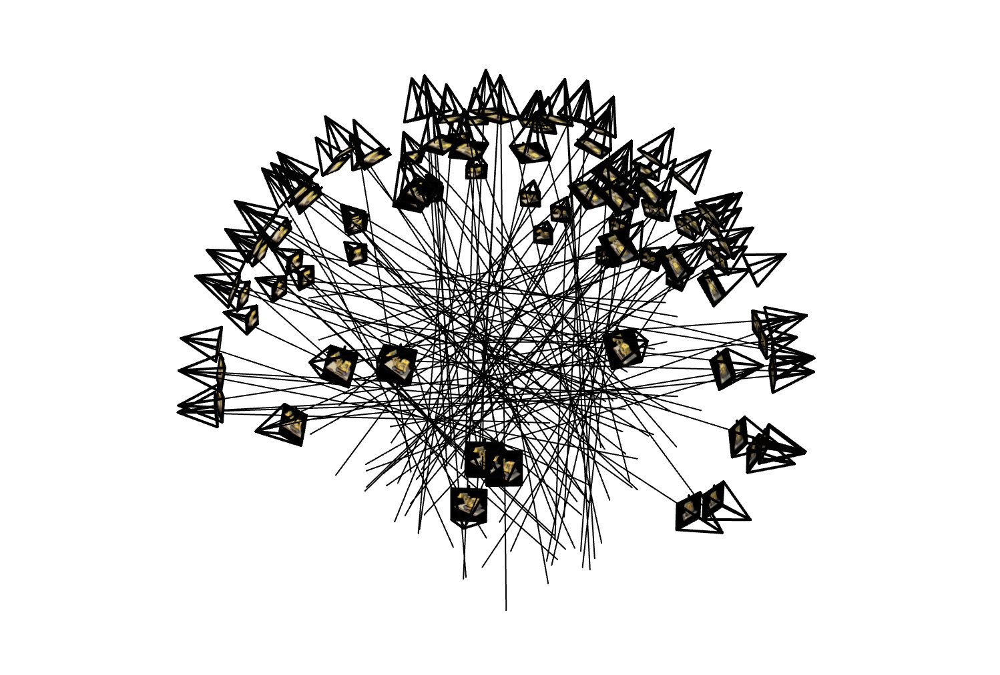
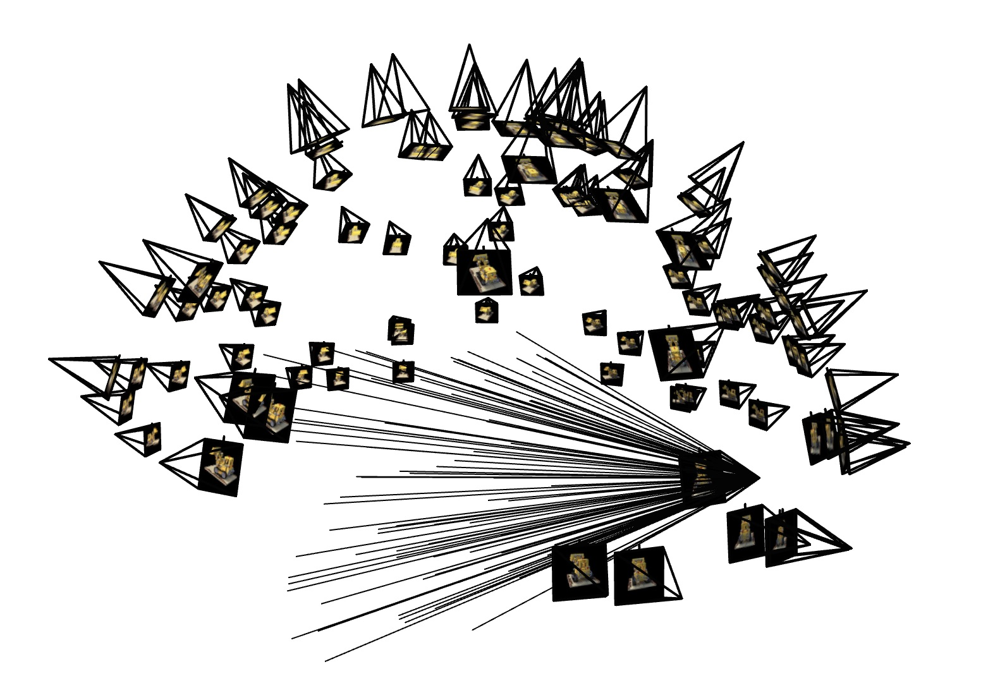
The NeRF network is an MLP that takes a 3D point along a ray plus a view direction and outputs a density and a color. I apply high-frequency positional encoding to the 3D position so the model can represent fine geometry and sharper boundaries, and a lower-frequency encoding to the viewing direction since view dependence usually changes more smoothly. The encoded position goes through several fully-connected layers with ReLU activations. In the middle, I use a skip connection to reintroduce the original position encoding so the deeper layers don’t “forget” it. From there, the network splits into two heads: one predicts a single density value, and the other predicts a feature vector that is combined with the encoded viewing direction to produce the final RGB color.
In practice, my NeRF uses 8 hidden layers with width 256 for the position stream. ReLU is applied after each hidden layer. The skip connection happens halfway through the network, where I concatenate the encoded position back into the feature stream. The density head is a small linear layer that outputs one non-negative scalar. The color head takes the intermediate feature, concatenates it with the direction encoding, and outputs three values that are squashed to RGB. This roughly matches the original NeRF design, but I coded it up myself in PyTorch based on the starter Lego example.
For each ray, I run the NeRF network at all sampled points along that ray and get a density and color for each sample. I then convert the densities into opacities and accumulate how much light is absorbed and how much passes through as I move along the ray. Each sample contributes some color based on its opacity and how much of the ray is still “visible” at that point. Summing up all of these contributions gives me the final pixel color. I compare this color to the ground-truth image using MSE, and I track PSNR on both training and validation sets to see if the model keeps improving.
At the start of training, the rendered images are noisy and washed out. You can barely tell there is a Lego model at all. After a few hundred iterations, the basic shape and colors show up, and as training continues the edges become sharper and small details like holes, shadows, and surface structure appear. The validation PSNR curve increases quickly in the beginning and then slowly flattens out as the network converges. By the end, the NeRF produces clean and consistent renderings of the Lego scene from both training and validation views.
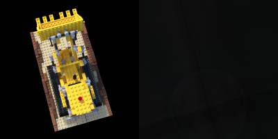
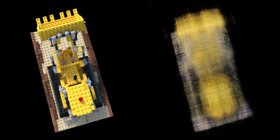
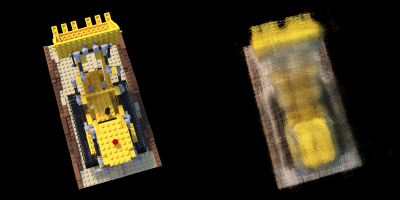
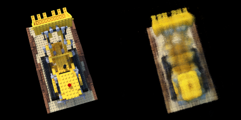
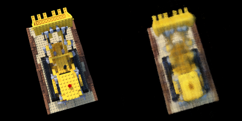
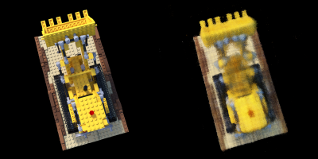
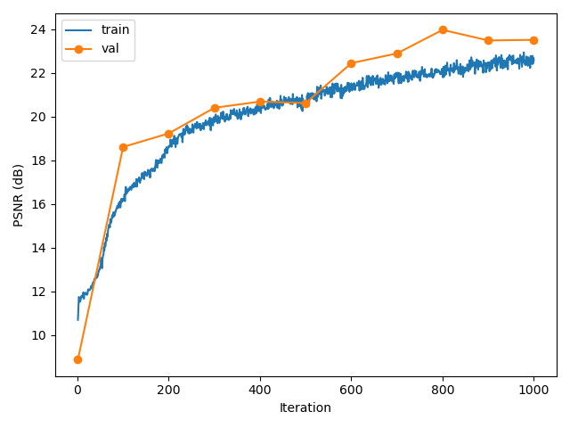
Spherical Rendering: Novel View Video
After training on the Lego data, I froze the NeRF weights and rendered images at the 60 test camera poses in c2ws_test,
which move around the object on a sphere. Playing these frames as a GIF gives a smooth orbit around the Lego scene.
Many of these viewpoints were never seen during training, so the fact that they still look coherent and solid shows that NeRF actually learned
a consistent 3D representation instead of just memorizing each 2D image.
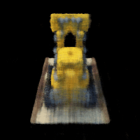
Part 2.6: Training NeRF on My Own Captured Data
In the final part, I took the same NeRF implementation and trained it on my own scanned object from Part 0
(using my_data_obj3.npz). I kept the architecture the same (8 layers, width 256) but had to be more careful with the data processing
and hyperparameters because my real-world data was messier than the Lego dataset. My phone photos were high resolution, so I downscaled them
and scaled the focal length accordingly. I also used the distribution of camera positions to automatically pick reasonable near and far planes,
so the sampling focused on the object instead of empty parts of the scene.
- I computed the minimum and maximum distance from all camera centers to the origin and used that to set the initial near and far bounds, then shrunk the range a bit so it mostly covered the object rather than the whole room.
- I downscaled the original high-resolution photos and scaled the focal length by the same factor, which kept the intrinsics consistent while making training faster and less memory-heavy.
-
I used 64 samples along each ray and trained for 4000 iterations with
rays_per_iter = 8000on GPU. On CPU, I reduced the number of rays per iteration when needed to keep things running. - Every 500 iterations, I logged the loss and rendered the same validation camera to see how the reconstruction was evolving. This helped me catch bad settings early, like when the model got stuck predicting something close to black.
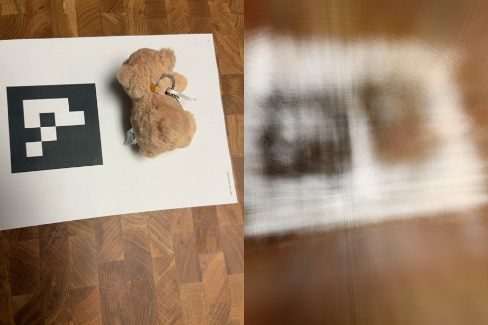
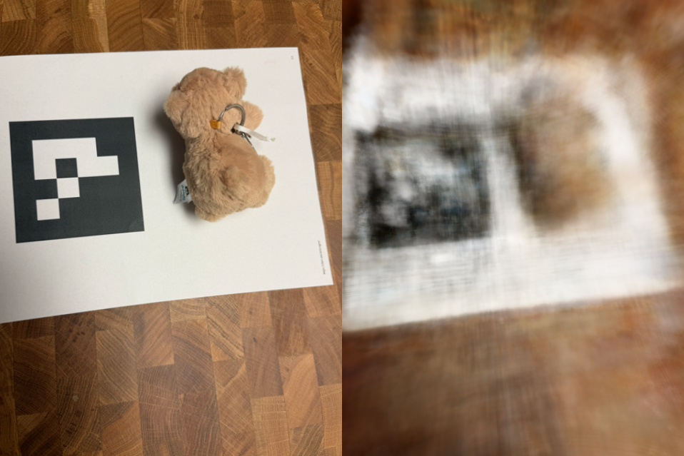
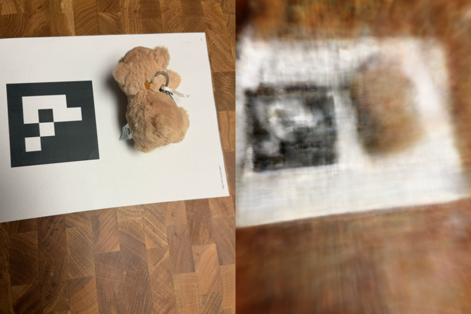
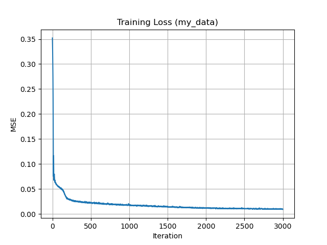
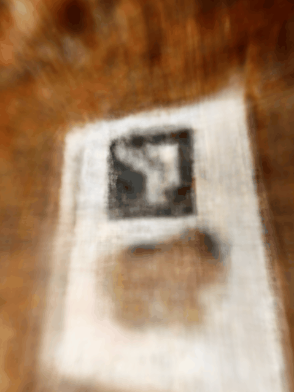
look_at_origin and
rot_x helpers. The views are novel but stay stable and consistent.
Compared to the Lego scene, my dataset was definitely messier: phone camera noise, uneven lighting, a busier background, and some pose error. Early on, the NeRF tried to explain everything in the frame, including the table and shadows, which led to blurry geometry and weird floating pieces. Tightening the near/far range and using enough samples per ray helped the network focus more on the actual object. If I were to redo the capture, I’d use more even lighting, a simple background, and more viewpoints spaced evenly around the object. Even with all of that, I still got surprisingly decent novel views, which was really cool and also a good reminder that NeRF likes clean data a lot more than chaotic real-world setups.
Overall, this project made the connection between coordinate-based neural networks and 3D scene reconstruction feel way more concrete. Part 1 was a nice warm-up where we treated images as continuous 2D functions and used a small MLP to repaint them from coordinates alone. Part 2 took that same idea and scaled it into 3D, turning it into a full radiance field that can be rendered from lots of different viewpoints. Part 2.6 then closed the loop by applying NeRF to my own phone photos, which showed me both how powerful the method is and how sensitive it can be to lighting, camera poses, and data quality. It was very satisfying to go from raw pictures I took myself to a learned 3D scene I could orbit around.